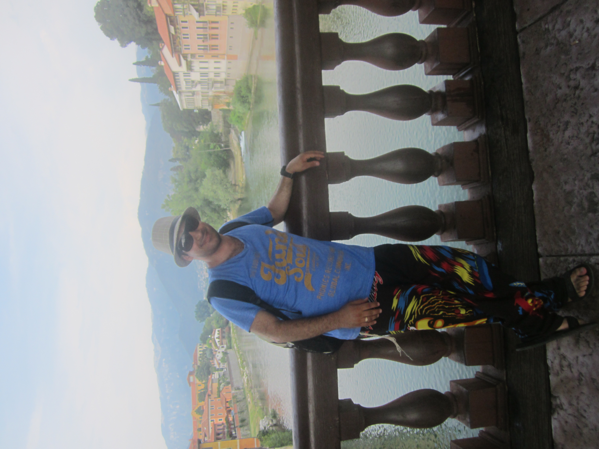
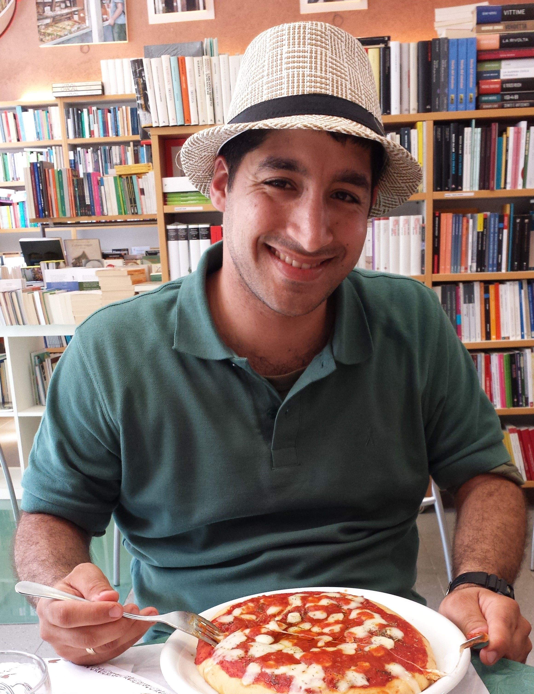
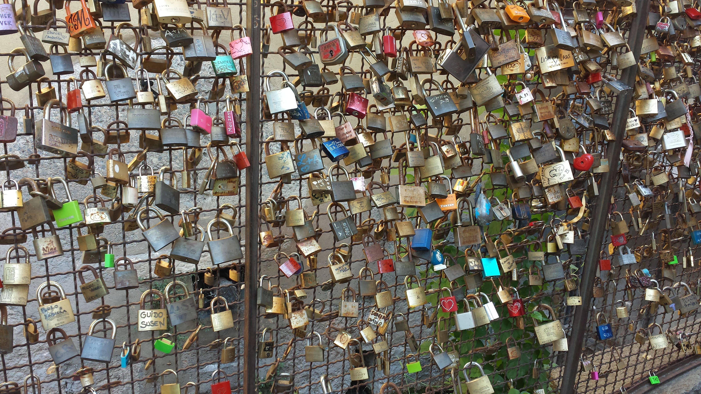

Travel Memories




QA Tester in Training • Adventurer • Detail-Oriented • Eager to Learn
I'm Ron Zlatin, combining my passion for software QA with a love for travel and exploration.
As a QA tester in training, I focus on manual testing, bug reporting, and writing detailed test scenarios.
My journey into quality assurance is fueled by curiosity, ambition, and a desire to deliver flawless user experiences.
I enjoy working with tools like Selenium and SQL, constantly improving my skills with hands-on practice.
Traveling helps me see different cultures, sharpen my observational skills, and inspire new perspectives.
From bustling cities to quiet landscapes, I capture photos that tell stories and preserve memories.
I believe that detailed QA work and photography both require patience, precision, and passion.
📬 Feel free to email me directly.